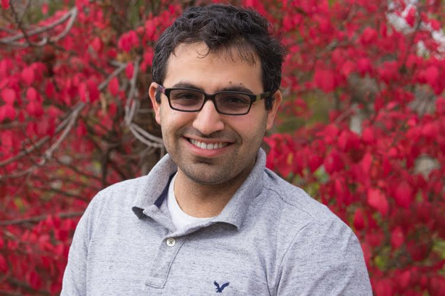

 |
|
Contact University of Illinois at Urbana-Champaign
Educational Background
| Research Interests
Publications Visit the Google scholar page for a list of Ahmed Fawaz's publications. Please email me for any preprint copies that you might need.
|
Professional Background
|
Research Awards and Honors
|
Short BiographyAhmed M. Fawaz is an Electrical and Computer Engineering (www.ece.illinois.edu) Ph.D. candidate at the University of Illinois at Urbana-Champaign(illinois.edu) and is advised by William H. Sanders (whs.crhc.illinois.edu). His research interests include designing cyber resiliency protection strategies to protect against advanced threats. Ahmed received his bachelor’s degree in Electrical and Computer Engineering from the American University of Beirut (AUB) in 2011.
|